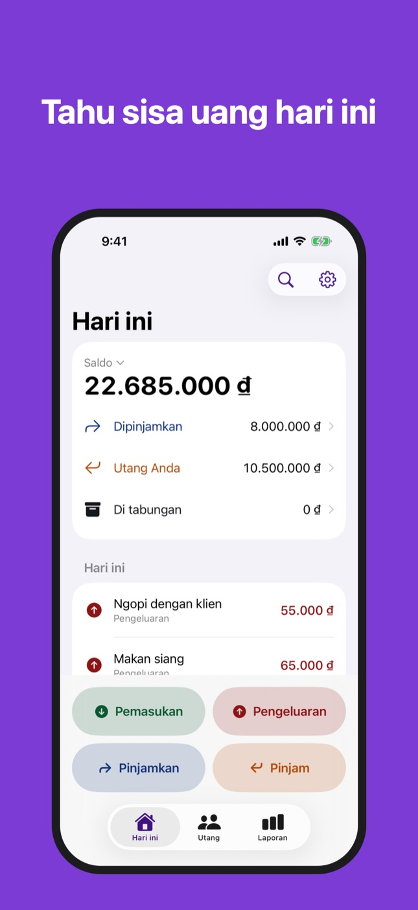
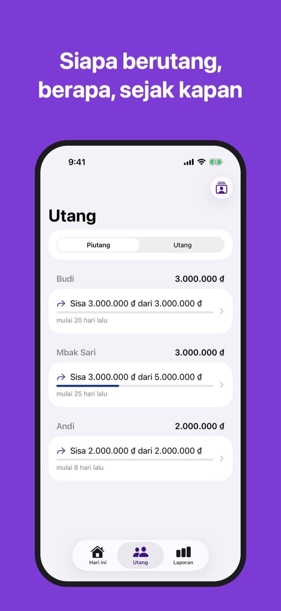
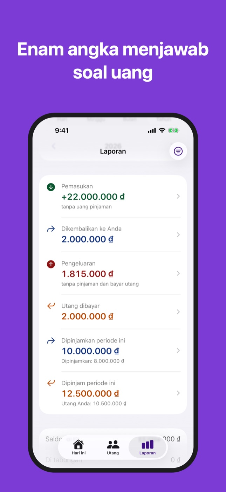

Moneybook: Catat Uang & Utang
Pinjam meminjam jadi jelas
Siapa berutang pada Anda? Anda berutang pada siapa? Catat dalam hitungan detik, satu mata uang per dompet. Tanpa akun, tanpa iklan, data tetap di iPhone Anda.



Empat tombol, tidak lebih
Pemasukan, Pengeluaran, Pinjamkan, Pinjam, langsung di layar pertama. Ketik jumlah, ketuk Simpan.
Buku utang dua arah
"Piutang" dan "Utang": siapa, berapa sisanya, sejak kapan. Catat bayar sebagian, lunas, atau putihkan utang.
Enam angka
Per Hari, Minggu, Bulan, atau Tahun. Ketuk angka untuk melihat catatan yang membentuknya.
Meminjamkan bukan pengeluaran
Uang yang dipinjamkan tidak dihitung sebagai pengeluaran, dan uang pinjaman tidak dihitung sebagai pemasukan. Jadi "bulan ini saya belanja berapa" adalah angka yang sebenarnya.
Lupa? Catat di hari yang tepat
Buka laporan Harian, mundur ke hari yang terlewat, ketuk Pemasukan atau Pengeluaran. Catatan masuk ke hari yang sedang dilihat.
Pengingat utang yang sopan
Pesan ditulis untuk Anda lengkap dengan sisa yang tepat. Anda baca, lalu pilih sendiri cara mengirimnya; aplikasi tidak mengirim apa pun atas nama Anda.
Dibandingkan dengan titik yang sama periode lalu
Di bawah Pengeluaran pada laporan Minggu, Bulan, dan Tahun: paruh pertama bulan ini dibandingkan paruh pertama bulan lalu, bukan setengah bulan dengan sebulan penuh.
Pengingat malam
Mati sampai Anda menyalakannya, di jam pilihan Anda. Pada hari Anda sudah mencatat, pengingat diam saja.
Banyak dompet, banyak mata uang
Tunai, bank, e-wallet. Angka besar adalah jumlah dompet Anda; ketuk untuk melihat tiap dompet. Satu mata uang per dompet (rupiah, dolar, dong, dan lainnya), masing-masing dijumlah sendiri tanpa konversi. Transfer antardompet bukan pengeluaran ataupun pemasukan.
Kategori milik Anda
Beri nama sesuai keseharian: Makan, Tagihan, Transportasi, Kondangan. Laporan bisa disaring per dompet, per kategori, atau keduanya.
Widget layar utama
Uang yang Anda pinjamkan dan utang Anda, tanpa membuka aplikasi. Ketuk untuk membuka utang-piutang.
Cadangkan & Pulihkan
Cadangan otomatis ke iCloud milik Anda, atau ke file CSV dan JSON. Pengembang tidak dapat membaca data Anda.
Data Anda milik Anda
Tanpa akun, tanpa iklan, tanpa pelacakan. Dengan cadangan iCloud mati, aplikasi berjalan sepenuhnya offline.
Terang, gelap, dan wallpaper sendiri
Mengikuti iPhone Anda, atau pilih di Pengaturan. Pasang wallpaper sendiri; angka uang selalu tetap terbaca.
Delapan bahasa
Indonesia, Inggris, Vietnam, Jepang, Korea, Thai, dan Mandarin (Sederhana dan Tradisional). Ganti di Pengaturan, tanpa membuka ulang. Dong ditulis cara Vietnam di semua bahasa.